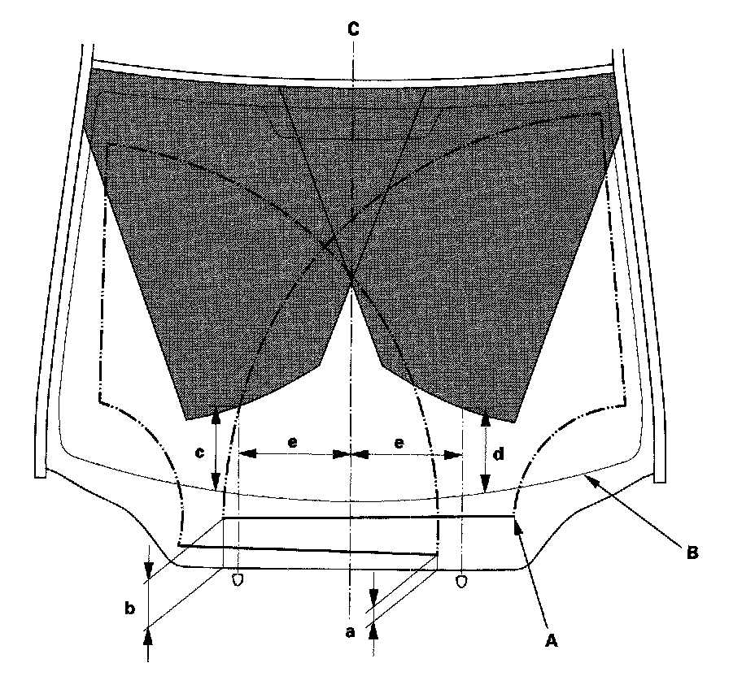

Wiper Arm: Adjustments
Wiper Arm/Nozzle AdjustmentWiper arms stop position
1. When the wiper arms stop at the automatic stop position, confirm that they are at the standard position.
2-door
a. Position at about 1.1 in. (29 mm) from the top of cowl cover (A)
b. Position at about 4.1 in. (106 mm) from the top of cowl cover (A)
4-door
a. Position at about 0.9 in. (23 mm) from the top of cowl cover (A)
b. Position at about 3.8 in. (96 mm) from the top of cowl cover (A)
Washer nozzle position

2. When you turn on the washers, confirm 50% or more of the washer fluid lands within the spray area. If the spray area is not within the standard positions, adjust the nozzles.
2-door
c. Position at about 11.8 in. (302 mm) from the top of the black ceramic area (B) at the lower windshield
d. Position at about 11.8 in. (302 mm) from the top of the black ceramic area (B) at the lower windshield
e. Position at about 9.8 in. (250 mm) from the windshield center line (C)
4-door
c. Position at about 7.6 in. (192 mm) from the top of the black ceramic area (B) at the lower windshield
d. Position at about 7.6 in. (192 mm) from the top of the black ceramic area (B) at the lower windshield
e. Position at about 9.8 in. (250 mm) from the windshield center line (C)